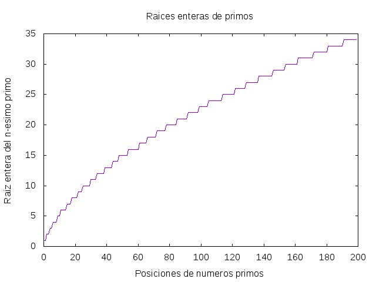

Sucesión de raíces enteras de los números primos
Definir las siguientes funciones
raicesEnterasPrimos :: [Integer] posiciones :: Integer -> (Int,Int) frecuencia :: Integer -> Int grafica_raicesEnterasPrimos :: Int -> IO () grafica_posicionesIniciales :: Integer -> IO () grafica_frecuencias :: Integer -> IO ()
tales que
-
raicesEnterasPrimoses la sucesión de las raíces enteras (por defecto) de los números primos. Por ejemplo,
λ> take 20 raicesEnterasPrimos [1,1,2,2,3,3,4,4,4,5,5,6,6,6,6,7,7,7,8,8] λ> raicesEnterasPrimos !! 2500000 6415
-
(posiciones x)es el par formado por la menor y la mayor posición de x en la sucesión de las raíces enteras de los números primos. Por ejemplo,
posiciones 2 == (2,3) posiciones 4 == (6,8) posiciones 2017 == (287671,287931) posiciones 2018 == (287932,288208)
-
(frecuencia x)es el número de veces que aparece x en la sucesión de las raíces enteras de los números primos. Por ejemplo,
frecuencia 2 == 2 frecuencia 4 == 3 frecuencia 2017 == 261 frecuencia 2018 == 277
-
(grafica_raicesEnterasPrimos n)dibuja la gráfica de los n primeros términos de la sucesión de las raíces enteras de los números primos. Por ejemplo,(grafica_raicesEnterasPrimos 200)dibuja

-
(grafica_posicionesIniciales n)dibuja la gráfica de las menores posiciones de los n primeros números en la sucesión de las raíces enteras de los números primos. Por ejemplo,(grafica_posicionesIniciales 200)dibuja

-
(grafica_frecuencia n)dibuja la gráfica de las frecuencia de los n primeros números en la sucesión de las raíces enteras de los números primos. Por ejemplo,(grafica_frecuencia 200)dibuja

Soluciones
import Data.Numbers.Primes (primes) import Graphics.Gnuplot.Simple raicesEnterasPrimos :: [Integer] raicesEnterasPrimos = map raizEntera primes raizEntera :: Integer -> Integer raizEntera = floor . sqrt . fromIntegral posiciones :: Integer -> (Int,Int) posiciones x = (n,n+m-1) where (as,bs) = span (<x) raicesEnterasPrimos cs = takeWhile (==x) bs n = length as m = length cs frecuencia :: Integer -> Int frecuencia x = length cs where (_,bs) = span (<x) raicesEnterasPrimos (cs,_) = span (==x) bs grafica_raicesEnterasPrimos :: Int -> IO () grafica_raicesEnterasPrimos n = plotList [ Title "Raices enteras de primos" , XLabel "Posiciones de numeros primos" , YLabel "Raiz entera del n-esimo primo" , Key Nothing , PNG "Sucesion_de_raices_enteras_de_primos_1.png" ] (take n raicesEnterasPrimos) grafica_posicionesIniciales :: Integer -> IO () grafica_posicionesIniciales n = plotList [ Title "Posiciones iniciales en raices enteras de primos" , XLabel "Numeros enteros" , YLabel "Posicion del numero n en las raices enteras de primos" , Key Nothing , PNG "Sucesion_de_raices_enteras_de_primos_2.png" ] (map (fst . posiciones) [1..n]) grafica_frecuencias :: Integer -> IO () grafica_frecuencias n = plotList [ Title "Frecuencias en raices enteras de primos" , XLabel "Numeros enteros n" , YLabel "Frecuencia del numero n en las raices enteras de primos" , Key Nothing , PNG "Sucesion_de_raices_enteras_de_primos_3.png" ] (map frecuencia [1..n])